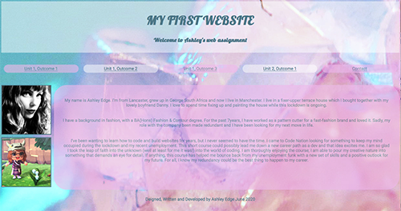
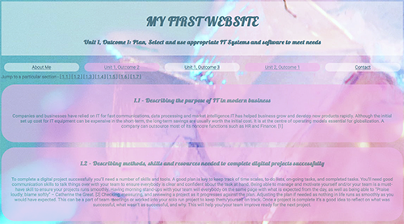
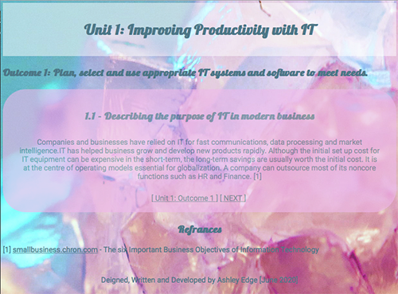
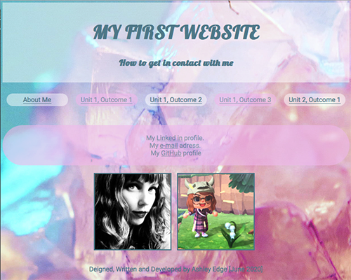

On the home page I have my header; created using a class called “header” which dictated the font size, background colour, padding and that the text would be aligned in the centre. Here is where you are first introduced to my flexbox navigation bar in alternating colours. I used another flexbox to have my images and ‘about me’ text side by side.
Each unit and outcome page are displayed in exactly the same layout. I reused the header class for the page title. Each answer is in its own purple bubble div. Any references I have used to write my content are below with links opening up a new window for the article to be read without diverting from my website. I also included a button at the bottom of the page to bring you back to the top
I personally struggle with reading large chunks of text displayed on a screen all at once so I created a sub-navigation bar leading to individual web pages with each answer displayed. After each answer, I put a mini navigation bar so the user could go back an answer, back to the main outcome page or move onto the next answer.
My contact page has links to my Linked in, email, and GitHub account. Along with the same navigation bar I have used throughout my website. I reused my about me images in a row flexbox as the page was looking a bit bare.
Deigned, Written and Developed by Ashley Edge [June 2020]